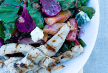
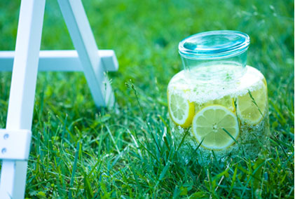

Свежие публикации
-
Блог даши
Ура, мы вместе
Привет! Это напоминает приезд долгожданных друзей к тебе домой, а еще лучше – на дачу
05 мая, в 11:36, 0 -
Детская кулинарная школа
Жить вкуснее!
Когда рождается ребенок – все безумно счастливы, а когда ему исполняется 6 месяцев – никто (кроме родителей и друзей.
03 мая, в 17:18, 0 -

СОВЕТЫ ДИЕТОЛОГА
Едим зелень
Зелень условно можно разделить на мягкую и твердую. У твердой, как ты догадываешься, стебельки и листья – жесткие.
05 мая, в 11:36, 0
-

СОВЕТЫ ДИЕТОЛОГА
Едим зелень
Зелень условно можно разделить на мягкую и твердую. У твердой, как ты догадываешься, стебельки и листья – жесткие.
05 мая, в 11:36, 0 -
Блог даши
Ура, мы вместе
Когда рождается ребенок – все безумно счастливы, а когда ему исполняется 6 месяцев – никто (кроме родителей и друзей, конечно) не замечает эту дату. Вот уже полгода, как наш сайт появился в нете. И мы как родители рады за наше дитя:)
05 мая, в 11:36, 0